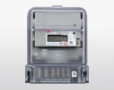
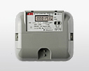
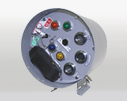
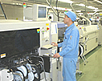

大正６年以来、数少ない電力量計の製造メーカとして100年以上の歴史を積み重ね、計量法に基づく「電力量計指定製造事業者」として公共性の高い電力量計を製造しています。また、その分野で培った技術をベースとした、計測機器・計測システムを創造し続けています。
当事業部では、電力の取引に使用する各種電力量計、太陽光発電などの新エネルギーを計量する電力量計、負荷管理用センサーおよび配電自動化の核となる開閉器子局などを製造しています。
お届けする製品は、「お客さまの満足度NO.1」を目指し、高品質の維持とコスト低減に向けて日夜努力しています。
また、創業以来豊富な経験と行き届いたサービスで、高い信頼とご評価をいただき続けること、製造のプロフェッショナルで有り続けることのために市場のニーズを把握し、迅速に対応できるサービスを目指しています。

ユニット式計器

ＥＬ(Ｓ)計器

配電自動化開閉器子局

基板実装
機器組立
当事業部では、各電力会社殿向けおよび一般向けの電力量計をはじめとし、電力量センサー、モニターなどエネルギー管理用機器としての製品を製造しご提供させていただいております。
電力量計については計量法を遵守し指定製造事業者としての責任と意識を持ち、また、ものづくりにおいては、より一層高いレベルでの品質(Quality)、コスト(Cost)、納期(Delivery)、安全(Safety）の目標を達成するため、全員で5S活動をベースとした業務改善に取組み、お客さまに満足していただけるよう日々チャレンジします。
計測システム事業部長